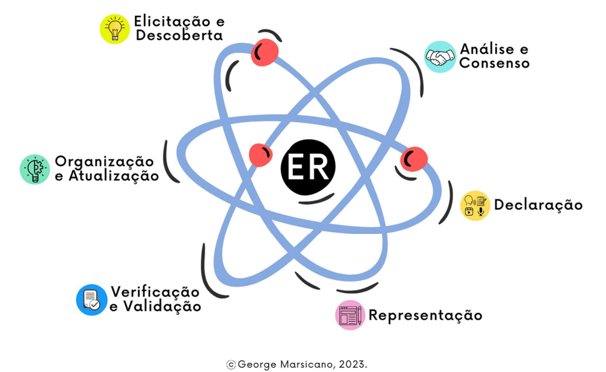

⚙️ Processo de Desenvolvimento de Software
- Abordagem: Ágil
- Ciclo de Vida: Ágil (iterativo e incremental)
- Processo: SCRUM e RAD
A metodologia escolhida é uma combinação de Scrum com Rapid Application Development (RAD), buscando unir a estrutura iterativa e o envolvimento ativo do cliente, característicos do Scrum, à prototipagem rápida e às entregas frequentes, que são marcas registradas do RAD.
Ciclo de Vida e Processo:
- Início Rápido: Utilizando a abordagem RAD, iniciaremos com uma fase de planejamento enxuta para identificar os requisitos básicos e desenvolver protótipos iniciais.
- Sprints de Desenvolvimento: Seguindo o Scrum, organizamos sprints para desenvolver funcionalidades, com foco em prototipagem rápida e refinamento contínuo.
- Revisões Constantes: No fim de cada sprint, realizaremos revisões com as partes interessadas para validar as funcionalidades e coletar feedback para iterações futuras.
Atividades de Engenharia de Requisitos:

- Elicitação e Descoberta: Técnicas de elicitação de requisitos são aplicadas para compreender e documentar as necessidades dos stakeholders.
- Análise e Consenso: Os requisitos elicitados são analisados para determinar a prioridade, viabilidade e buscar um consenso.
- Declaração: Documentação clara e detalhada dos requisitos é criada para servir como referência.
- Representação: Modelos e especificações visuais dos requisitos são desenvolvidos para uma melhor compreensão e comunicação.
- Verificação e Validação: Requisitos são verificados e validados para assegurar sua corretude e alinhamento com as necessidades do negócio.
- Organização e Atualização: Os requisitos são continuamente organizados e atualizados para refletir quaisquer mudanças ou novos entendimentos.
Atividades de Engenharia de Requisitos no Processo de Desenvolvimento de Software:
Fase Inicial:
Elicitação e Descoberta: Logo no início do projeto, esta atividade é conduzida para coletar requisitos básicos e entender as necessidades dos stakeholders. Esta fase envolverá entrevistas, sessões de brainstorming e discussões em equipe para elucidar a visão do produto.
Análise e Consenso: Depois de elicitados, os requisitos são analisados para identificar prioridades e validar viabilidade. A equipe chega a um consenso sobre quais requisitos são essenciais para o MVP (Minimum Viable Product).
Sprints de Desenvolvimento:
Representação: Durante as primeiras sprints, os requisitos elicitados são convertidos em modelos visuais, como diagramas, wireframes e protótipos de baixa fidelidade, usando ferramentas como Figma.
Prototipagem: Nas primeiras fases de desenvolvimento, os requisitos são traduzidos em protótipos interativos, permitindo feedback rápido e ajustes contínuos.
Sprint Planning e Daily: Em cada sprint, a equipe revisará o backlog de requisitos para definir as tarefas a serem realizadas e discutir o progresso diário, garantindo que todos estejam alinhados com os objetivos do sprint.
Revisão de Sprint e Retrospectiva: Ao final de cada sprint, a equipe realiza uma revisão para verificar o progresso e receber feedback dos stakeholders. Isso permite ajustar e refinar os requisitos conforme necessário para a próxima iteração.
Fase de Testes e Validação:
Teste e Validação: Durante esta fase, os requisitos são testados quanto à conformidade e usabilidade. As atividades de verificação incluem testes contínuos para garantir que o produto atenda aos requisitos definidos.
Verificação e Validação: Esta atividade ocorre em paralelo aos testes, garantindo que os requisitos sejam válidos, coerentes e atendam às expectativas do cliente. Sessões de validação com os stakeholders também ajudam a coletar feedback e identificar áreas de melhoria.
Fase de Organização e Atualização:
Organização e Atualização: À medida que o projeto avança, os requisitos são revisados e atualizados para refletir mudanças ou novos insights. Esta atividade é contínua, garantindo que o backlog esteja sempre alinhado com as necessidades do projeto.
Fase de Lançamento e Implementação:
Revisão Final e Implementação: Antes do lançamento final, a equipe revisará todos os requisitos para garantir que estão completos e corretos. A fase de implementação considera todas as atividades de engenharia de requisitos para assegurar um lançamento correto do produto.
Atividades
| Nome da Atividade | Método | Ferramenta | Entrega |
|---|---|---|---|
| Elicitação e Descoberta | Entrevistas com stakeholders e sessões de brainstorming | Teams | Uma lista de requisitos coletados |
| Análise e Consenso | Análise de requisitos e votação | Discord ou Teams e Google Docs e Kanban board (GitHub Projects) | MVP |
| Representação | Modelagem visual | Discord e Figma | prototipagem de baixa fidelidade |
| Prototipagem | Individual ou pareado | Discord e Figma | Protótipos de media/alta fidelidade |
| Sprint de Desenvolvimento | Scrum | Kanban board (Git Projects) | Funcionalidades |
| Teste e Validação | Teste contínuo e iterativo | Ferramentas de CI/CD | Relatório de testes |
| Verificação e Validação | Sessões de validação com stakeholders | Teams | Levantamento de pontos fortes e aspectos de melhorias da equipe |
| Organização e Atualização | Gerenciamento de requisitos | Discord, Kanban board (Git Projects) e Google Docs | Backlog de requisitos atualizado |
| Revisão e Retrospectiva | Cerimônia do scrum | Discord e WhatsApp | Feedback e Ajustes no Produto |
| Lançamento e Implementação | Estratégias de lançamento RAD | Ferramentas de build automatizado | Aplicativo mobile (APK) |